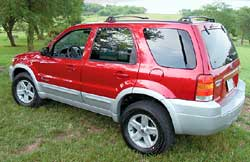

If you buy a hybrid before 2006, you can take a $2,000 deduction onyour federal income taxes. Basically, this deduction will reduceyour federal taxable income by $2,000. For hybrids bought afterJan. 1, 2006, the recently enacted energy bill set up tax credits ?ranging from $250 to $3,400, depending on the vehicle's fueleconomy. The credit would go toward your tax liability, the amountyou owe before any withholdings.
Over the long term, the credit will be more advantageous to thosewho buy newer hybrid models and less helpful to those who buybetter-selling hybrids such as the Prius. The energy billestablished a complex formula to reduce the credits once anautomaker sells more than 60,000 hybrids after Jan. 1. Hybridbuyers in 14 states also can take advantage of state-levelincentives, including tax credits and exemptions from sales tax.Hybrid buyers in Colorado, for example, are eligible for taxcredits of more than $4,500. There also are nonfinancial incentives? such as being allowed to drive in lanes for high-occupancyvehicles and park without paying meter fees. Visitwww.hybridcars.com to seeif there are programs where you live.
|
 Buy a Ford Escape Hybrid before 2006 and you can take a $2,000 deduction on your federal income taxes. |
|
|